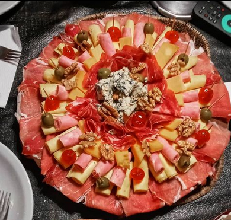
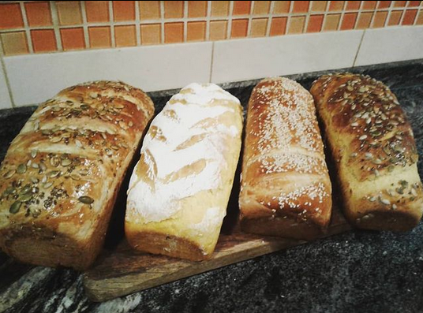
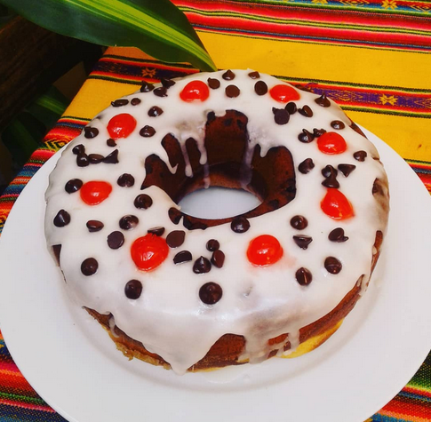
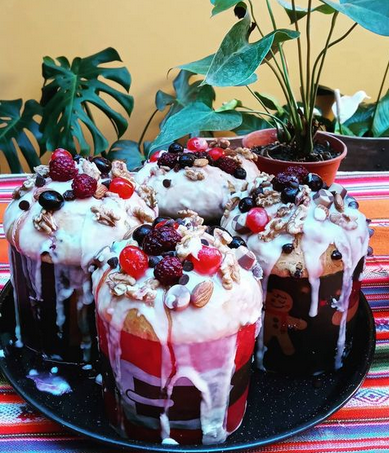
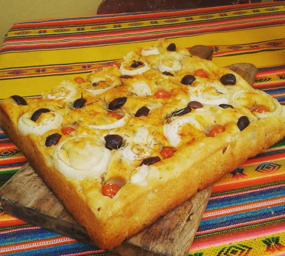
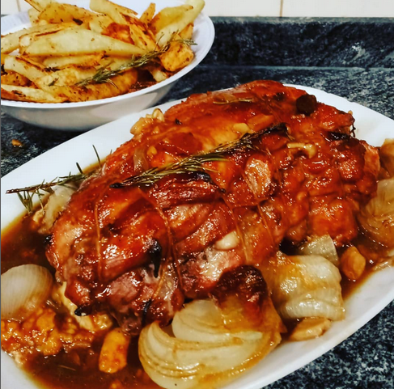
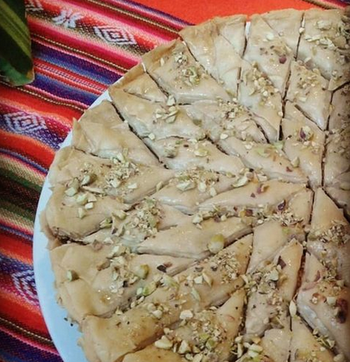

Mi Perfil
Mis Publicaciones...
Super picada:
@Yo El momento ideal para desconectarse es cuando llegan los amigos a casa, y una picada es el condimento indispensable para una juntada increíble. Pero hay que prepararlo con tiempo para que en la mesa no falte este rico Ver más...
#picada #fiambre #quesos
125 Me Gusta
Panes de Molde:
@Yo Uno de los grandes placeres en la cocina que estoy descubriendo desde hace un tiempo es el de preparar tus masas caseras, para todo tipo de preparaciones. Tal es mi afición que en la sección de masas Ver más...
#pancasero #masamadre
98 Me Gusta
Budín de Limón:
@Yo Este budín de limón se puede comer recién hecho pero yo te recomiendo hacerlo el día anterior, o si lo querés para merendar lo hagas esa mañana apenas te despiertes. Por qué? Porque cuando van pasando Ver más...
#budinlimon #limon #mates
74 Me Gusta
Mandarina Pie:
@Yo ¿Es época de mandarinas y tienes una licuadora cerca? A cocinar se ha dicho, si tienes estas dos cosas a mano y dos o tres ingredientes mas podes hacer una super torta de mandarina en licuadora. Hoy te Ver más...
#mandarina #torta
230 Me Gusta
Pan Dulce:
@Yo No van a poder creer lo que son estos mini pan dulce! Receta de pan dulce en formato mini y de esfuerzo mini! Porque éste pan dulce se hace en media hora. Hoy vamos a aprender a cocinar un pan dulce rico, con muchas frutas Ver más...
#pandulce #navidad
361 Me Gusta
Focaccia:
@Yo Me puse a leer un poquito acerca de su historia, donde surgió exactamente y encontré un montón de versiones… Resulta que sí, los italianos reclamaron su autoría en la receta dado que este tipo de pan saborizado tan particular Ver más...
#focaccia #italia
321 Me Gusta
Carne al horno:
@Yo El plato estrella a la hora de hablar de recetas económicas y ricas. Encima es facilísima, no pueden pedir nada más. Lo ideal, y para que este pan de carne sea mucho más rico, sería que tengas El plato estrella a la hora de hablar de Ver más...
#carne #carnehorno
412 Me Gusta
Baklava:
@Yo Baklava es un pastel elaborado con una pasta de pistachos o nueces trituradas, distribuida en una masa filo y bañado en almíbar o jarabe de miel. Existen diversas variedades que incorporan avellanas y almendras Ver más...
#baklava #postreturco
548 Me Gusta